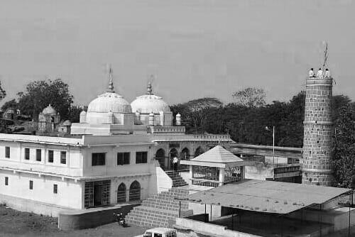
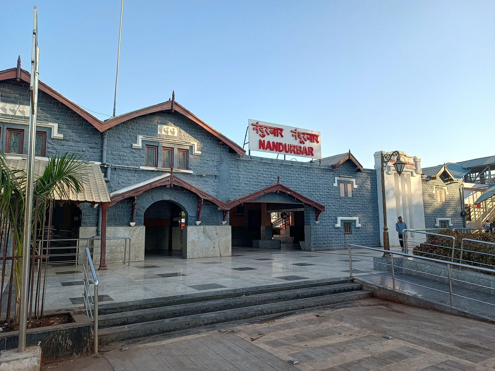
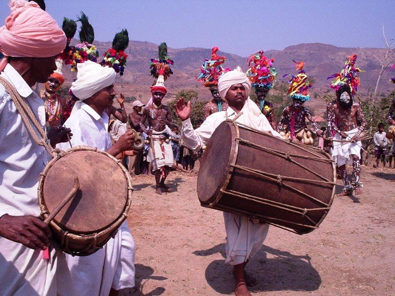
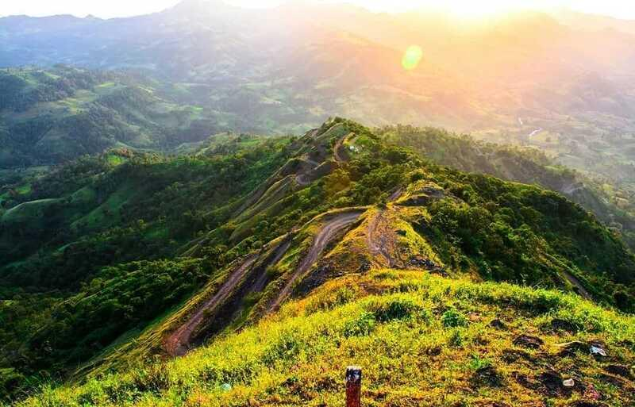
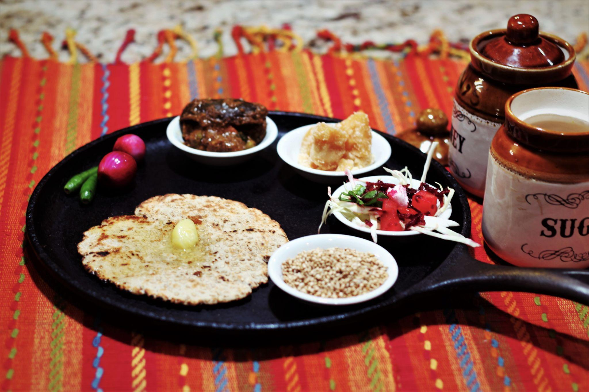
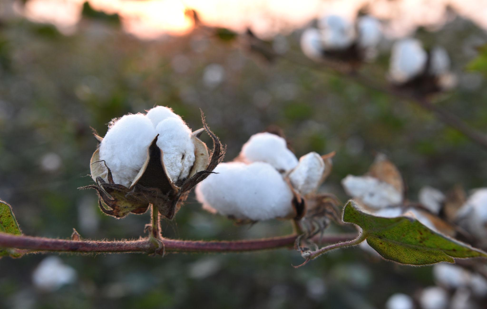
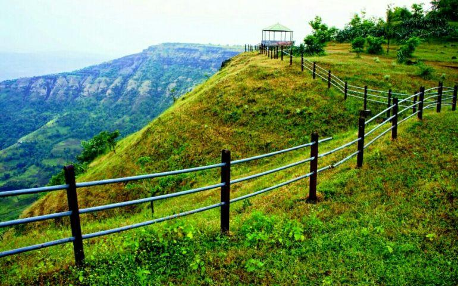

About

Location & Terrain: Nandurbar is nestled along the edges of the Satpura hills (traditionally called Satpuda Pradesh). It is bordered by Gujarat to the west and Madhya Pradesh to the north.Talukas: The district is divided into 6 tehsils: Nandurbar, Navapur, Shahada, Taloda, Akkalkuwa, and Akrani Mahal (Dhadgaon).
- Location: On the Tapi and Narmada Rivers, about 420 km northeast of Mumbai. It sits right on the border where Maharashtra meets Gujarat.
- Famous as: rich tribal heritage, the revered Asthamba tribal fair, and the Toranmal hill station. Historically known as Nandanagri, it is also highly regarded for the ancient Prakasha temples (often called "Dakshin Kashi") and its agricultural prominence in producing quality chillies.
History

Ancient Origins: The region was historically called Rasika and later Seunadesa under the Yadava dynasty. It was also known as Nandanagri after a Gavali king, Nandaraja.Khandesh Era: During Muslim rule, the name changed to Khandesh. It was governed as part of a larger district until it was split into West and East Khandesh.Modern Formation: Nandurbar officially emerged as an independent district on July 1, 1998, after being carved out from the historical Dhule district.
- Ancient Roots: Thrived under the Satavahanas, the Abhira dynasty (Gavali Kings), and the Yadavas of Devagiri.
- Key Rulers: King Nandaraja (Gavali dynasty), the Farooqui Sultanate, the Maratha Empire, and the British Raj.
- Historic Sites: Toranmal Fort, the ancient Kedareshvara Temple at Prakasha, the historic Asthamba shrine, and the tribal martyr memorial at Nandurbar city.
Culture

Tribal Heritage: The district features a large indigenous population consisting primarily of the Bhil, Korku, and Pardhi tribes.Festivals & Languages: Traditional fairs and festivals, such as the Bhil Sumer Mela and the Asthamba Fair, are highly significant. Main languages include Ahirani, Bhili, Marathi, and Gujarati.
- Main Festivals: Holi (celebrated with traditional tribal flair), Asthamba Fair, Toranmal Fair, and Diwali.
- Traditional Arts: Gheria dance, tribal bamboo crafts, and Pawara folk music.
- Language: Bhili, Ahirani, Marathi, and Gujarati.
Tourism

Toranmal: A scenic hill station set in the Sahyadri/Satpura ranges, famous for the Yashwant Lake and its pleasant climate.Prakasha: Located in Shahada taluka, this ancient temple town is often referred to as Dakshin Kashi and is home to the twin-domed Kedareshvara Temple.Unapdev: A popular natural hot water spring known for its therapeutic properties.
- Toranmal Fort: A historic hilltop fortress situated in the Satpura range that features deep valleys, rocky paths, and ancient ruins.
- Toranmal Wildlife Sanctuary: A protected forest reserve covering the Satpura mountain ranges that serves as a rich habitat for local flora, wild birds, and native animal species.
- Machhindranath Cave: An ancient rock-cut structure near the fort that was traditionally used by meditating ascetics and holy sages.
Famous Food

Staples: Tribal dietary practices feature locally grown millets (like barley), seasonal vegetables, and rice paired with regional pulses.Navapur Tur Dal: The region is famous for this variety of split pigeon peas, which holds a prestigious Geographical Indication (GI) tag.
- Famous dishes: Tribal Barley Khichdi (a wholesome porridge made from locally grown grains), Tuvar Dal Khichdi (a comforting rice and split pigeon pea dish), and spicy country-style chicken curry cooked with local red chillies.
- Local Specialty: Navapur Tur Dal (nationally famous pigeon peas with an official GI tag), Nandurbar and Dondaicha red chillies (bright, extra spicy peppers from the massive local markets), and fresh local millets.
Economy

Agriculture & Processing: The economy is overwhelmingly agrarian. Major crops include pulses, pigeon peas, and red chillies.Poultry & Industry: Poultry farming is highly prominent, particularly in Navapur. Additionally, the region is internationally recognized for pioneering the production of particle boards from sugarcane bagasse.
- Key Industries: Agri-processing and chilli trading mills, large-scale poultry hatcheries, and eco-friendly particle board manufacturing units that use local sugarcane waste.
- Main Crops:High-quality red chillies, cotton, pulses like the GI-tagged Navapur Tur Dal, and various local millets.
Environment

Flora & Fauna: Nandurbar features deciduous forests filled with teak, ain, sadada, and medicinal plants. The local biosphere thrives in the river valleys and protected wooded slopes.Climate: The district experiences a primarily hot and dry climate, with summer temperatures often reaching upwards of 45°C.
- Climate:Type: Features a tropical hot and dry climate with intense heat during the summer months. Summers (March to May) are exceptionally hot, with daily high temperatures regularly crossing 45°C. A modest monsoon brings rain from June to September, followed by a mild, pleasant winter.
- Key Rivers: The Tapi River flows through the northern plains to form the main basin, while the Narmada River forms the scenic northern boundary of the district. Other major local water channels like the Rangavali, Udai, Devganga, and Shiva rivers flow through the hilly terrain to feed these main lifelines.
- Protected Areas: The Toranmal Wildlife Sanctuary is a protected forest reserve covering the Satpura mountain ranges that protects rich tropical dry deciduous forests. The area is a thriving habitat for barking deer, leopards, wild boars, and various reptiles, while also serving as a popular spot for birdwatchers to see hornbills and peacocks.
Sports

Traditional games like Viti-Dandu and Kabbadi remain deeply popular at the grassroots level, while modern athletic infrastructure continues to develop through local youth welfare and school programs.
- Traditional Sports: Core sports like Kabaddi, Kho-Kho, and traditional wrestling (Kushti) dominate the local youth sporting culture across tribal villages and rural schools.
- Focus: Key venues include the Nandurbar District Stadium and local school grounds. The main athletic focus is on promoting rural sports talent, organizing regional archery competitions for tribal youth, and hosting school-level tournaments.